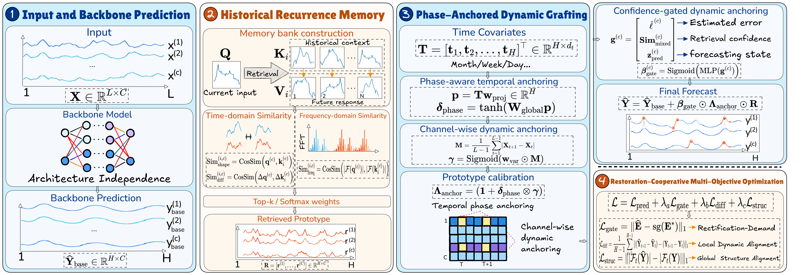

选取理由 近期回看，非当日新增，2026 年 11 月 24 日 UTC 的 v1。对均方损失抹平瞬态变化的问题，它用训练集历史响应和置信门进行局部补偿。先看冻结骨干、记忆库来源和检索时延，再考虑迁移到诊断时序。它提供动态恢复机制，不证明真实 Δt、超长流式或罕见破裂前兆一定改善。 评价：主题匹配高，机制迁移中等，工程可行性须实验验证，证据为原始全文及作者实验，本轮是首次归档回看，没有确认基线后的实质进展。
研究背景
由原简报的核心问题、选取理由和相关性整理，不替代原文背景综述。
长时序预测的点误差目标往往偏向稳定趋势和周期骨架，少量尖峰、斜率变化或转折在平均损失中权重不足。直接让更大的主模型学习所有动态，可能同时增加资源和过拟合风险。历史相似片段有机会提供局部响应，但相似外形不等于相同动力学，因此需要限制检索证据的来源、相位、通道和释放强度，并显式测量新增资源。
核心问题 如何在不破坏可靠骨架的前提下，选择性恢复历史中可重复的局部动态。关键是判断当前预测是否需要修正，以及检索的历史未来响应是否与当前状态兼容。训练时的误差监督可以读取标签，推理门控只能依据历史输入、骨干预测和检索置信。
对当前主题的关键意义在于：原始应用领域：电力、交通、气象等规则采样长时预测。可迁移模块或训练目标：冻结骨干上的训练集响应检索、相位通道校准与置信释放。对应在研问题：P1 多尺度预测的局部动态保真，P3 诊断前兆补偿对照。预期计算和显存影响：新增记忆库存储和穷举检索开销，抽稀减少扫描但可能损失精度。主要失效条件或数据风险：跨炮或跨装置动力学变化、训练片段重叠、罕见异常被常见历史覆盖。最小验证实验：按炮独立划分并排除相邻片段检索，比较骨干、普通检索残差和置信嫁接，分别评估稀有瞬态误差、逐炮预警、检索耗时和峰值显存。
方法与关键创新

Figure 2: Overview of GRAFT.
先训练或加载稳定骨干，再冻结预测路径训练嫁接分支。训练集片段的历史上下文作为键，完整后续真实响应作为值。形状、差分和频率多视角相似性构造原型，经相位和通道校准后由逐步置信门释放。需求估计器在训练时用骨干误差监督，推理不读取当前真实未来。差分损失加强变化率恢复，完整响应记忆与骨干残差记忆进行了消融。
阅读时需要把方法设计与主要结果一起看：表1 四预测长度平均，DLinear 在 ETTh2 的 MSE 0.563→0.350，作者报告相对下降 37.9%，TimeMixer 同数据集仅 0.383→0.375，约 2.1%。Weather 上 DLinear MSE 0.265→0.266，PDF 为 0.230→0.235，存在退化。表5 A100-PCIE-40GB，按滑窗样本摊销并跨四长度平均，TimeMixer ETTh1 时延 0.385→0.900 毫秒，Traffic 9.342→16.093 毫秒，不能作为单请求在线延迟。表6 记忆抽稀8倍使 DLinear ETTh1 MSE 0.420→0.455，存在质量代价。
实验结果 表1 四预测长度平均，DLinear 在 ETTh2 的 MSE 0.563→0.350，作者报告相对下降 37.9%，TimeMixer 同数据集仅 0.383→0.375，约 2.1%。Weather 上 DLinear MSE 0.265→0.266，PDF 为 0.230→0.235，存在退化。表5 A100-PCIE-40GB，按滑窗样本摊销并跨四长度平均，TimeMixer ETTh1 时延 0.385→0.900 毫秒，Traffic 9.342→16.093 毫秒，不能作为单请求在线延迟。表6 记忆抽稀8倍使 DLinear ETTh1 MSE 0.420→0.455，存在质量代价。
局限性 均为规则采样预测基准，没有百万长度、真实 Δt、缺模态或跨装置破裂实验。历史库只由训练集构建，但在训练内部若样本与记忆片段高度重叠，仍应增加隔离消融。新颖前兆无法靠重复历史自动恢复，分布偏移可能误嫁接。摘要的六骨干统计与正文八骨干表格口径不同，本期不把摘要均值当八骨干汇总。资源表是摊销时延，未给完整峰值显存保证。原文提到匿名代码但没有可确认专用 URL，本轮不标开源，未独立复现。
总结 检索加门控可作为局部变化恢复对照，收益依赖历史可复用性并付出检索成本。
研究相关性与启发 原始应用领域：电力、交通、气象等规则采样长时预测。可迁移模块或训练目标：冻结骨干上的训练集响应检索、相位通道校准与置信释放。对应在研问题：P1 多尺度预测的局部动态保真，P3 诊断前兆补偿对照。预期计算和显存影响：新增记忆库存储和穷举检索开销，抽稀减少扫描但可能损失精度。主要失效条件或数据风险：跨炮或跨装置动力学变化、训练片段重叠、罕见异常被常见历史覆盖。最小验证实验：按炮独立划分并排除相邻片段检索，比较骨干、普通检索残差和置信嫁接，分别评估稀有瞬态误差、逐炮预警、检索耗时和峰值显存。